Rubraview
사진 · 만화 · 동영상 · 음악
고른 파일을 바로 열고, 키 하나로 쪽을 넘기고, 방해하지 않는 가볍고 빠른 윈도우 뷰어입니다. C 로 만들어 곧바로 뜨고 메모리를 적게 씁니다. 인터넷에 연결하지 않고 아무것도 수집하지 않습니다.
설치할 필요가 없습니다. 압축을 풀고 rubraview.exe 를 실행하거나, rubraview.exe 하나만 받아 실행하세요. MSI 는 모든 사용자용으로 설치하고 탐색기 우클릭 메뉴를 등록하며, Store 판은 저절로 업데이트됩니다.
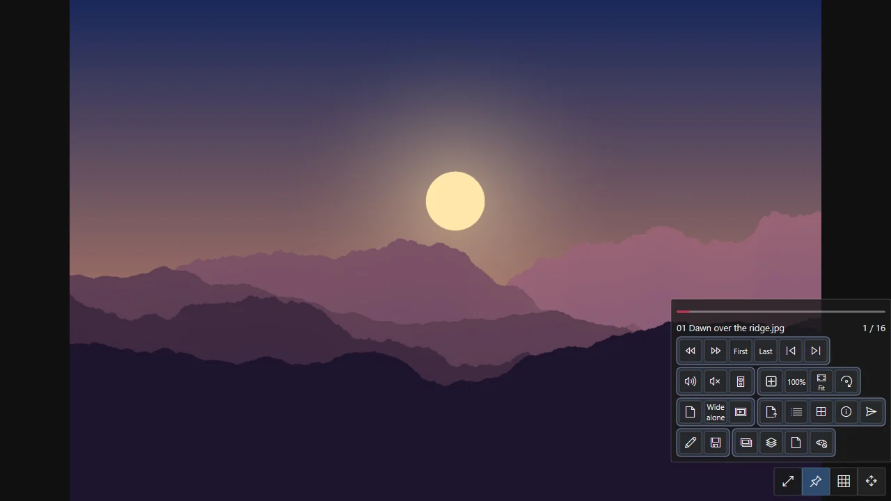
한눈에 보기
사진
JPEG·PNG·GIF·WebP·TIFF·BMP·ICO·AVIF 를 코덱 설치 없이, 움직이는 그림까지.
만화
CBZ·CB7·CBR 을 풀지 않고 한 쪽·두 쪽·오른쪽부터·웹툰으로, 읽던 곳 기억.
동영상
MP4·MKV·AVI·MOV·WebM 을 그래픽 카드로, 자막·구간 반복·속도·프레임 이동.
음악
MP3·FLAC·M4A·AAC·WMA·OGG·Opus·WAV 를 표지·가사·이퀄라이저·분석기와 함께, 오디오북은 장마다.
파일
썸네일·자세히 보기의 파일 브라우저, 즐겨찾기, 장바구니, 끌어서 옮기기, 복사·이름 바꾸기·되돌리기.
압축 파일
ZIP·7z·RAR 등의 안을 보고, 탐색기에서도 원하는 곳에 풀고, ZIP·7z 로 압축.
편집
선택 영역 위의 단계 편집, 색 보정, 효과 21가지, 크기 조정, 내보내기와 일괄 처리.
내 방식대로
모든 기능에 바꿀 수 있는 단축키, 5개 언어, 어디로도 보내지 않는 데이터.
보고 싶은 방식 그대로, 사진
사진은 창에 맞춰 열리고, 그래픽 카드로 부드럽게 확대·이동합니다. 화살표, 휠, 창 가장자리로 쪽을 넘기고, 휠 스트립과 필름 스트립이 다음 사진을 보여 줍니다. AVIF, 움직이는 GIF·APNG·WebP 를 그대로 열고, JPEG XL 은 Windows 나 FFmpeg 가 읽을 수 있으면 열립니다. 화면 가운데를 누르면 내비 상자가 떠서 쪽 막대, 처음과 끝, 옆 폴더나 압축 파일로 가는 버튼, 정해 둔 폴더로 한 번에 복사·이동하는 버튼을 보여 줍니다. 아무것도 열지 않았을 때는 시작 화면이 무엇부터 하면 되는지 알려 줍니다.


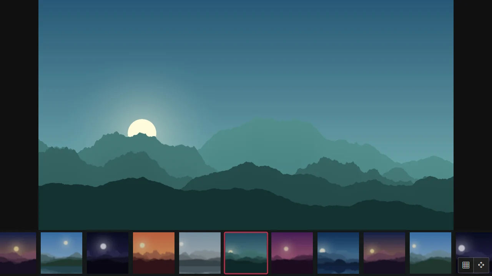
풀지 않고 읽는 만화와 책
CBZ/ZIP, CB7/7z, CBR/RAR 을 솔리드·분할·암호까지 압축을 풀지 않고 읽습니다. 한 쪽 또는 두 쪽 나란히, 일본 만화는 오른쪽부터, 표지와 넓은 펼침 쪽은 따로, 웹툰은 위에서 아래로. 책마다 읽던 곳에서 다시 열리고, 재생목록에 넣은 책들은 그 자리에서 차례로 이어 읽습니다.

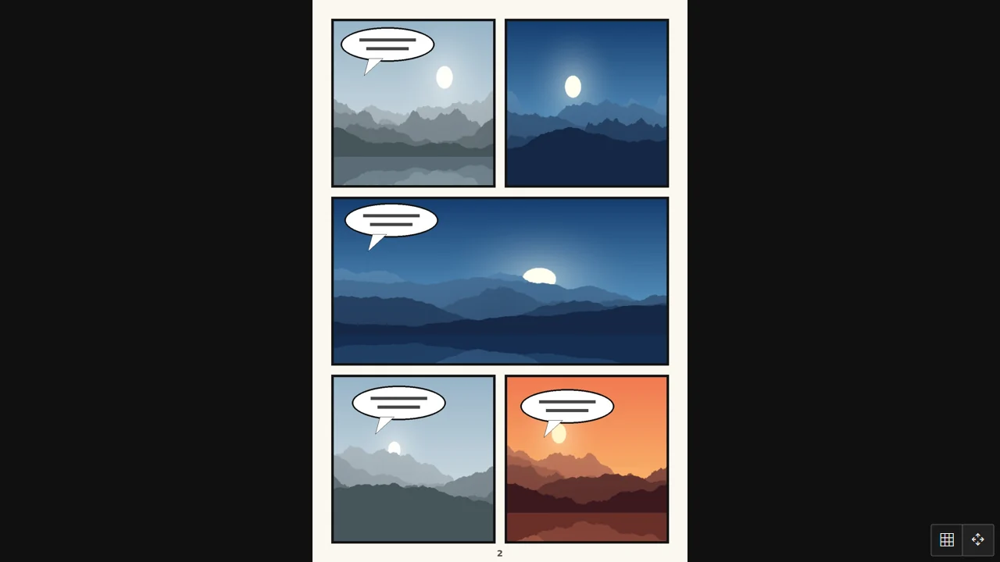

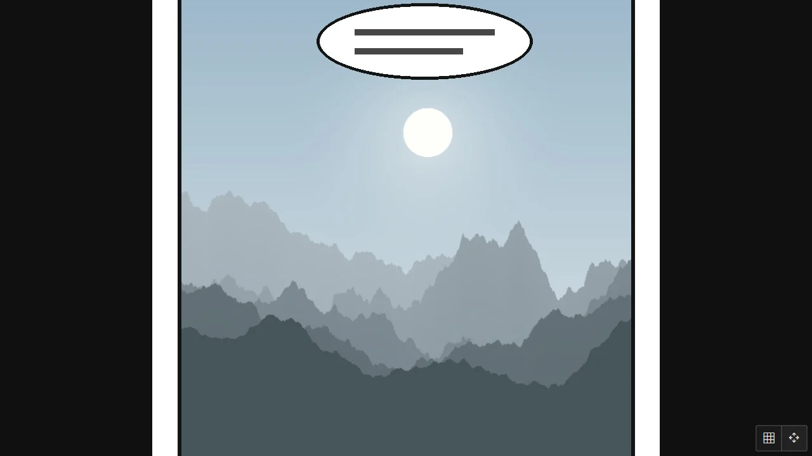
파일 브라우저
폴더와 파일을 썸네일이나, 크기·해상도·길이가 있는 자세히 보기 목록으로 보고, 아무 열로나 정렬하고, 폴더를 먼저 또는 파일을 먼저 놓습니다. 한 번 클릭하면 선택하고 두 번 클릭하면 열며, 여러 개는 체크박스로 고르고 다른 파일을 눌러도 체크는 그대로입니다. 프로그램과 문서는 제 프로그램으로 열립니다. 고른 파일을 폴더 위로 끌면 옮기고, Ctrl 을 누르면 복사합니다. 즐겨찾기에는 폴더와 파일을 모두 담고, 장바구니 다섯 개는 압축 파일 안까지 여기저기서 파일을 모아 한꺼번에 복사·이동합니다. 프로그램이 폴더나 파일을 고르라고 할 때도 이 브라우저가 열립니다.

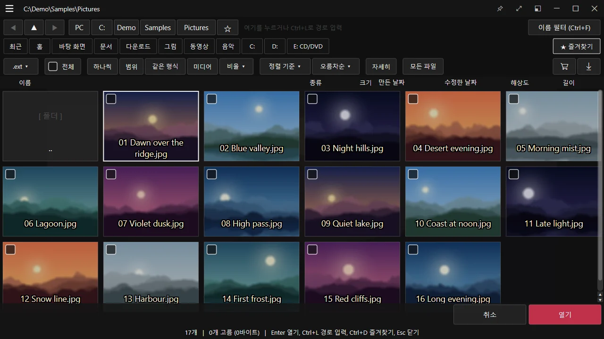

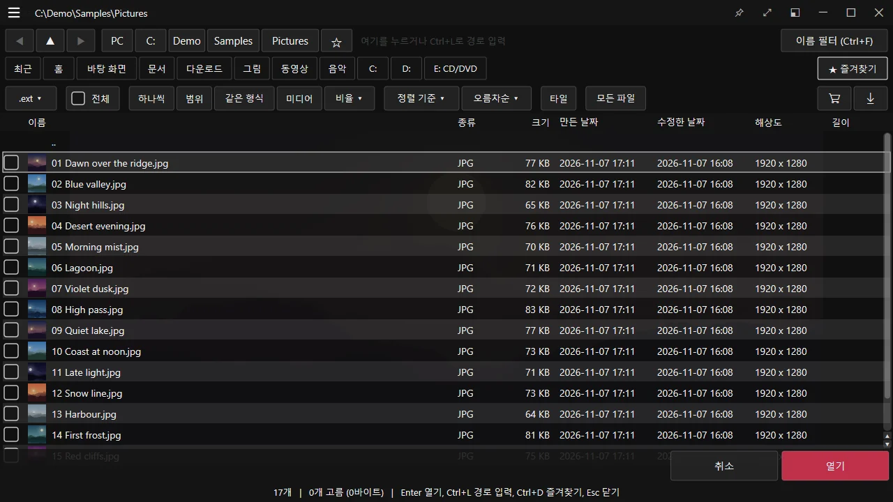
압축 프로그램 없이 다루는 압축 파일
ZIP, 7z, RAR, ALZ, EGG, TAR 의 안을 폴더처럼 보고, 들어 있는 것을 열고, 고른 폴더에 풀고, 푼 뒤에는 여기서나 탐색기에서 엽니다. 파일을 ZIP 이나 7z 로 묶고, 원하면 암호와 분할도. 윈도우 코드페이지로 저장된 한글 이름도 제대로 읽습니다. 탐색기 우클릭 메뉴로 여기에 풀기, 이름 폴더에 풀기, 알아서 풀기를 작은 창 하나로 하고, 압축 풀기와 복사·이동은 뷰어를 닫아도 끝까지 이어집니다.

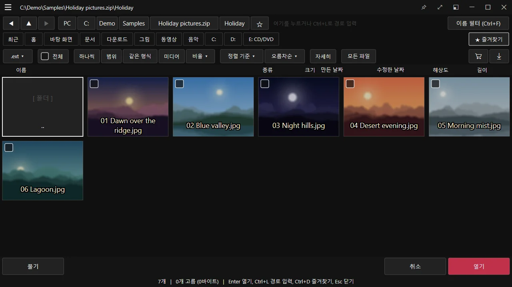

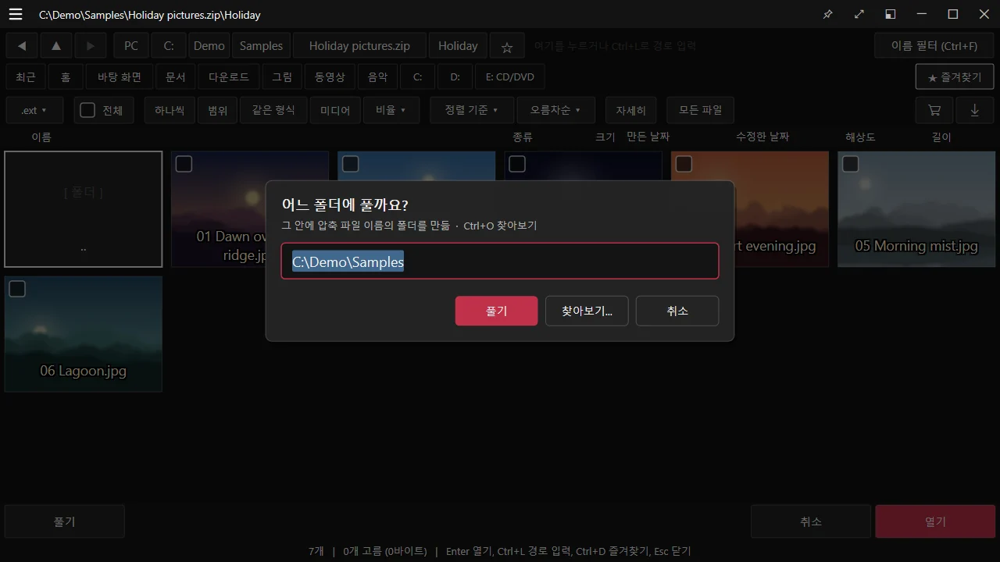
자막과 함께 보는 동영상
동영상은 윈도우 디코더로, 또는 프로그램 옆에 FFmpeg 를 두면 FFmpeg 로, 그래픽 카드에서 재생됩니다. 자막(SRT, SAMI, WebVTT, ASS, DVD)은 보면서 앞뒤로 옮기고, 자막 창에서 고치고, MKV·MP4 에서 꺼내거나 넣습니다. A-B 구간 반복, 속도 바꾸기, 한 프레임씩 이동, 장면 저장. 재생하면서 노출·대비·색·선명도를 바꿀 수 있고, 화면 가운데의 내비 상자에는 재생, 시간 막대, 음소거, 음량 막대가 있습니다.


표지와 가사가 함께하는 음악
MP3, FLAC, M4A, AAC, WMA, OGG, Opus, WAV 를 표지, 태그, 시간에 맞춘 가사와 함께 재생하고, 스펙트럼이나 파형이 함께 움직입니다. 큐 시트는 앨범 한 파일을 곡으로 나누고, 오디오북(.m4b)은 Page Down·Page Up 으로 장을 넘깁니다. 프리셋과 10 밴드 이퀄라이저, 야간 모드, 끊김 없는 재생, 늘 위에 뜨는 미니 플레이어. 윈도우 설정은 그대로 두고 이 앱의 소리만 다른 장치로 보낼 수도 있습니다.

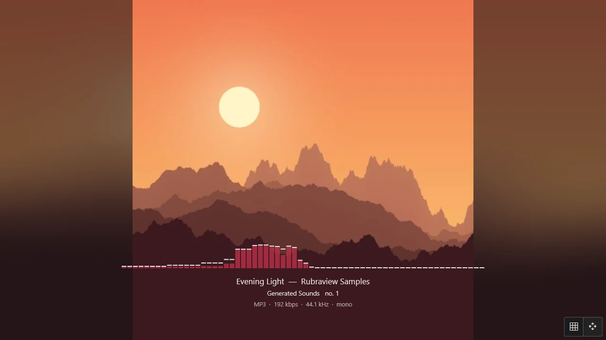

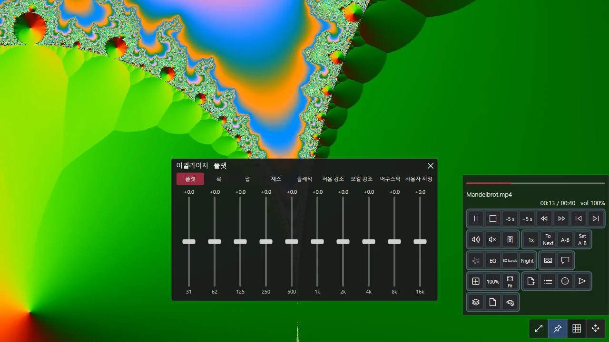
편집, 내보내기, 일괄 처리
선택 영역 위의 단계로 사진을 보정합니다. 톤, 색 균형, 자동 색 보정, 효과 21가지, 자르기, 크기 조정을 저장하기 전까지 되돌리고 다시 할 수 있고, 원본이나 사본으로 저장합니다. JPEG, PNG, WebP, AVIF 등으로 내보내고, 일괄 처리로 수백 개 파일에 이름 규칙·테두리·워터마크와 함께 똑같이 적용합니다.

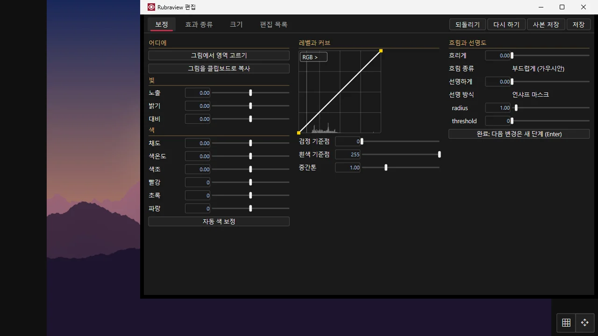

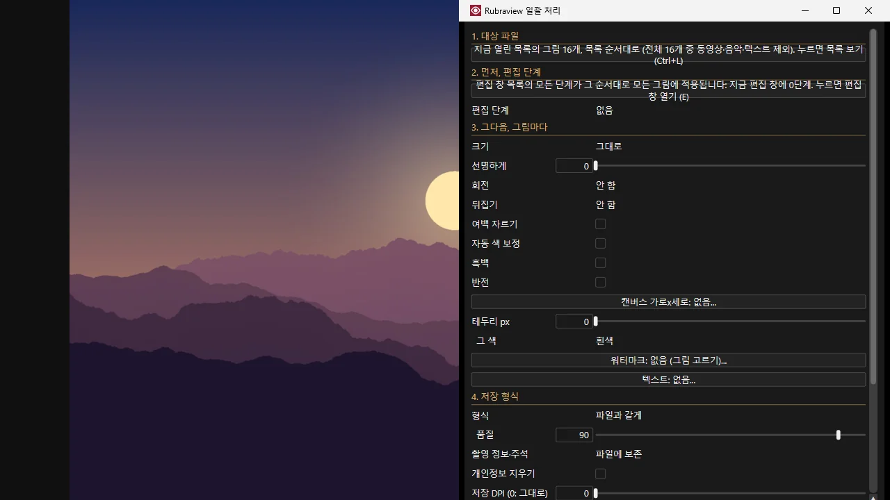
읽기 좋은 텍스트 파일
TXT, LOG, NFO, MD 를 읽기 좋은 쪽으로 엽니다. 한국어·일본어·중국어 인코딩은 추측하거나 고르고, 줄바꿈을 문단으로 정리하고, 도는 중에도 속도를 바꾸는 자동 스크롤과 찾기·복사가 됩니다.

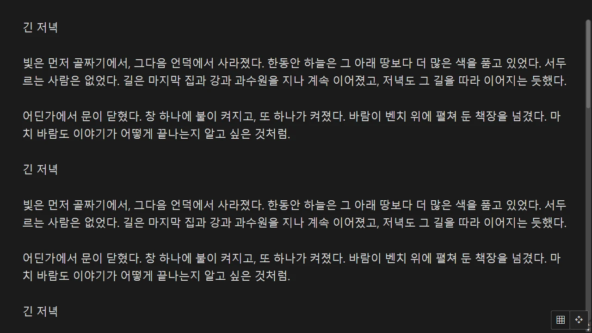
파일에 관한 모든 것
정보 창은 사진의 크기·색·카메라·EXIF 전체, 동영상의 스트림과 디코더, 노래의 태그를 보여 주고, 글자를 골라 복사할 수 있습니다. 폴더의 파일 수와 크기도 알려 줍니다. 뷰어의 속성 창(Alt+Enter)에는 윈도우 속성 창처럼 자세히, 디지털 서명, 보안, 이전 버전 쪽이 있습니다. 도움말은 모든 단축키를 사용자의 언어로 보여 줍니다.

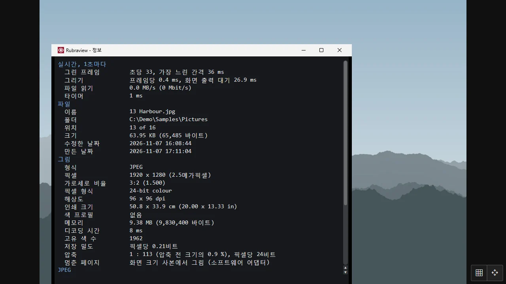

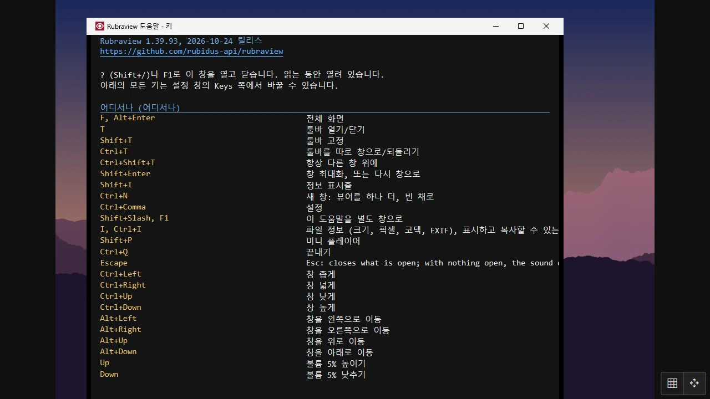
설정과 단축키, 모두 내 마음대로
모든 기능에 단축키가 있고, 키 설정 쪽에서 모든 키를 바꿀 수 있습니다. 키보드 그림 위에 파일 종류마다 각 키가 하는 일을 보여 주고, 이름이나 하는 일로 키를 찾을 수 있습니다. W A S D 는 화살표처럼 씁니다. 설정은 프로그램의 부분마다 쪽이 있고, 영어·한국어·일본어·중국어·페르시아어로 나옵니다.

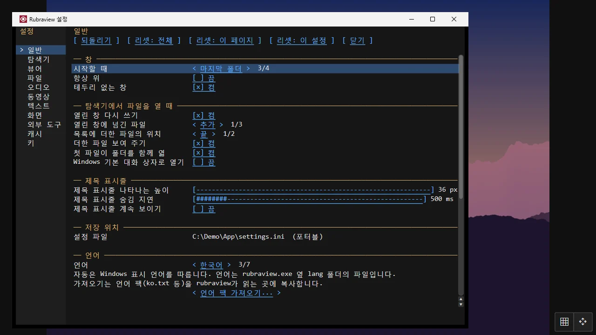

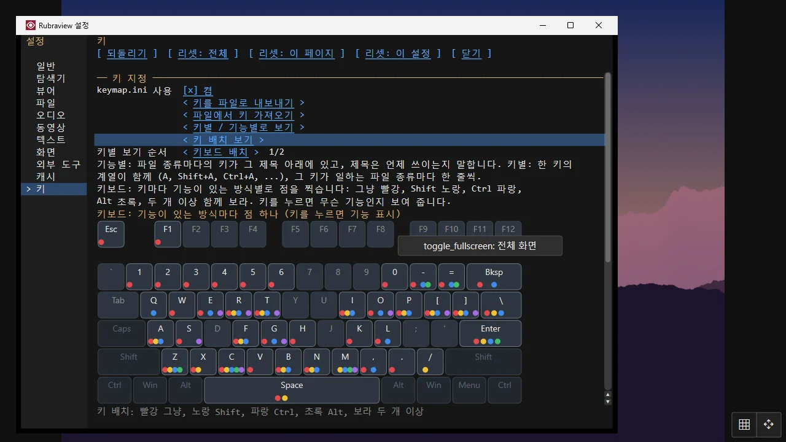


윈도우용 내려받기
설치할 필요가 없습니다. 압축을 풀고 rubraview.exe 를 실행하거나, rubraview.exe 하나만 받아 실행하세요. MSI 는 모든 사용자용으로 설치하고 탐색기 우클릭 메뉴를 등록하며, Store 판은 저절로 업데이트됩니다.